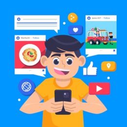
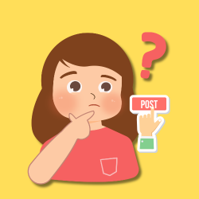
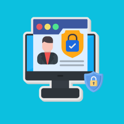
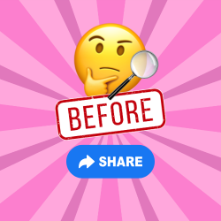
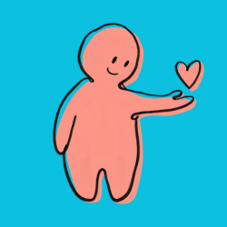
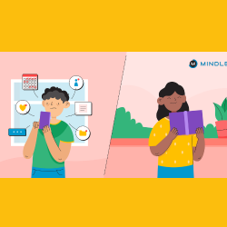

Media sosial sudah menjadi bagian dari kehidupan sehari-hari. Kita bisa menggunakannya untuk berkomunikasi dengan teman, mencari informasi, menemukan hal-hal baru, menikmati hiburan, dan membagikan kreativitas. Dengan media sosial, kita dapat terhubung dengan banyak orang meskipun berada di tempat yang berbeda.
Namun, menggunakan media sosial dengan benar juga sangat penting. Kita perlu menjaga privasi, berpikir sebelum mengunggah sesuatu, memeriksa informasi, dan menghargai orang lain. Dengan menjadi pengguna media sosial yang bijak, kita tetap bisa bersenang-senang tanpa melupakan keamanan dan tanggung jawab.
Media sosial adalah platform digital yang memungkinkan orang untuk berkomunikasi, berbagi informasi, dan membuat berbagai macam konten. Saat ini, media sosial digunakan untuk banyak hal, mulai dari mengobrol dengan teman, mengikuti berita, mencari tutorial, sampai melihat konten hiburan. Media sosial juga dapat menjadi tempat untuk menunjukkan kreativitas melalui foto, video, musik, gambar, dan tulisan. Bagi pelajar, media sosial juga dapat membantu menemukan informasi yang berguna untuk belajar dan menambah pengetahuan.
Walaupun memiliki banyak manfaat, media sosial juga memiliki risiko jika digunakan tanpa berhati-hati. Informasi palsu dapat tersebar dengan cepat, komentar yang tidak sopan dapat menyakiti orang lain, dan informasi pribadi dapat disalahgunakan. Karena itu, kita harus memahami bahwa apa yang dilakukan di dunia digital tetap memiliki dampak di kehidupan nyata. Menjadi pengguna media sosial yang baik berarti menggunakan teknologi dengan bertanggung jawab dan tetap menghargai diri sendiri serta orang lain.

Media sosial bisa menjadi tempat yang menyenangkan untuk berbagi, belajar, dan berkomunikasi. Namun, kita tetap perlu menggunakannya dengan bijak. Yuk, simak beberapa tips sederhana agar pengalaman menggunakan media sosial tetap aman, positif, dan menyenangkan!

Sebelum mengunggah sesuatu, pikirkan terlebih dahulu apakah postingan tersebut pantas untuk dibagikan. Sesuatu yang kita anggap sebagai candaan belum tentu dianggap lucu oleh orang lain. Perhatikan juga apakah unggahan tersebut dapat mempermalukan, menyakiti, atau merugikan seseorang. Dengan berpikir sebelum posting, kita dapat menghindari masalah dan menjadi pengguna media sosial yang lebih bertanggung jawab.

Jangan membagikan informasi pribadi secara sembarangan di media sosial. Informasi seperti alamat rumah, nomor telepon, password, dan lokasi secara langsung sebaiknya dijaga. Gunakan pengaturan privasi yang tersedia dan pastikan hanya orang yang dipercaya yang dapat melihat informasi tertentu. Tidak semua hal tentang kehidupan pribadi harus diketahui oleh orang lain di internet.

Ketika menemukan berita atau informasi yang menarik, jangan langsung membagikannya. Periksa sumber, tanggal, dan isi informasi tersebut terlebih dahulu. Jika informasinya berasal dari sumber yang tidak jelas, jangan langsung percaya atau menyebarkannya. Kebiasaan memeriksa informasi sebelum share dapat membantu mengurangi penyebaran hoaks di media sosial.

Selalu gunakan kata-kata yang sopan ketika berkomentar atau berinteraksi dengan orang lain. Perbedaan pendapat merupakan hal yang wajar, tetapi kita tetap harus menghargai orang lain. Hindari komentar yang menghina, merendahkan, atau sengaja menyakiti seseorang. Sebelum menulis sesuatu, pikirkan terlebih dahulu bagaimana perasaan orang yang membacanya.

Media sosial memang menyenangkan, tetapi kita juga perlu mengatur waktu penggunaannya. Jangan sampai terlalu lama menggunakan media sosial membuat kita lupa belajar, tidur, berolahraga, atau menghabiskan waktu bersama keluarga dan teman. Dengan mengatur screen time, kita dapat menikmati media sosial tanpa membiarkannya mengganggu kegiatan sehari-hari.
Media sosial memang seru untuk digunakan, tetapi masih banyak kesalahan yang sering dilakukan tanpa disadari. Kesalahan kecil seperti membagikan informasi pribadi atau langsung percaya pada berita yang belum jelas dapat menimbulkan masalah. Yuk, kenali beberapa kesalahan yang sebaiknya kita hindari saat menggunakan media sosial!
Membagikan terlalu banyak informasi pribadi di media sosial dapat membahayakan privasi. Hindari mengunggah alamat rumah, nomor telepon, password, atau informasi pribadi lainnya.
Jangan langsung membagikan berita hanya karena terlihat menarik. Periksa sumber dan kebenaran informasinya terlebih dahulu agar tidak ikut menyebarkan hoaks.
Menulis komentar kasar atau menghina orang lain dapat menyakiti perasaan mereka. Perbedaan pendapat tetap harus disampaikan dengan sopan dan menghargai orang lain.
Mengunggah sesuatu tanpa memikirkannya terlebih dahulu dapat menyebabkan penyesalan. Pastikan postingan kita aman, pantas, dan tidak merugikan diri sendiri maupun orang lain.
Terlalu lama menggunakan media sosial dapat membuat kita lupa waktu dan mengabaikan kegiatan penting. Atur waktu penggunaan media sosial agar tetap seimbang dengan belajar, istirahat, dan kegiatan lainnya.
Kamu sedang menggunakan media sosial. Pilih tindakan yang menurut kamu paling tepat dalam setiap situasi!
✓ Smart move! Always check before sharing.
✓ Good choice! Respect and communication matter.
✓ Correct! Passwords should stay private.